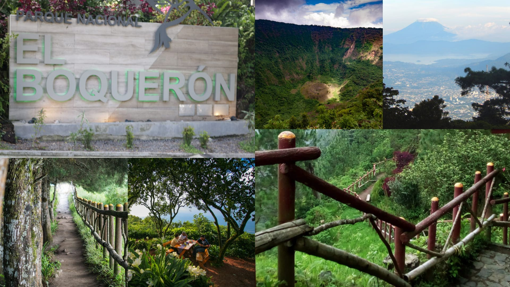

Parque Nacional El Boquerón
En el parque puedes realizar diferentes actividades como caminatas entre la flora del lugar,
fotografiar diferentes tipos de aves y otras especies de fauna. Si te decides por visitar
los miradores hacia el cráter, es necesario hacerlo en compañía de un guía. No olvides que
es un área protegida, por lo que debes respetar todas las recomendaciones de las autoridades
y así como la señalización.
CONTENIDO
Turismo
El parque cuenta con miradores desde donde se pueden observar el cráter y otros sitios como el Lago de Ilopango,
los volcanes de Izalco y Santa Ana, la ciudad de San Salvador y los cerros de Quezaltepeque.
El parque tiene disponible una caseta de información en la cual puede solicitar realizar caminatas guiadas y descender
hasta el cráter, admirar la flora y fauna del lugar. Entre la fauna que podrá observar se destacan:
venado, mapache, torogoz, urraca, pájaro carpintero, entre otros.
El ascenso hasta los miradores del cráter le tomará entre 5 y 10 minutos.
Distintos restaurantes y cafés se encuentran en las cercanías del volcán.

Leyenda
En el cráter Boquerón, lo que existía era una laguna, citada por historiadores como
Jorge Lardé y Larín, Porfirio Barba Jacob y además por pobladores de la zona, se dice
que era una laguna en la que se podía navegar, ahí se transportaba la madera, con la erupción
desapareció en veinte días y dejó al descubierto el pequeño volcancito o Boqueroncito que vemos
ahora, desde los miradores del cráter. Es un paisaje único, que vale la pena visitar y conocer su historia.